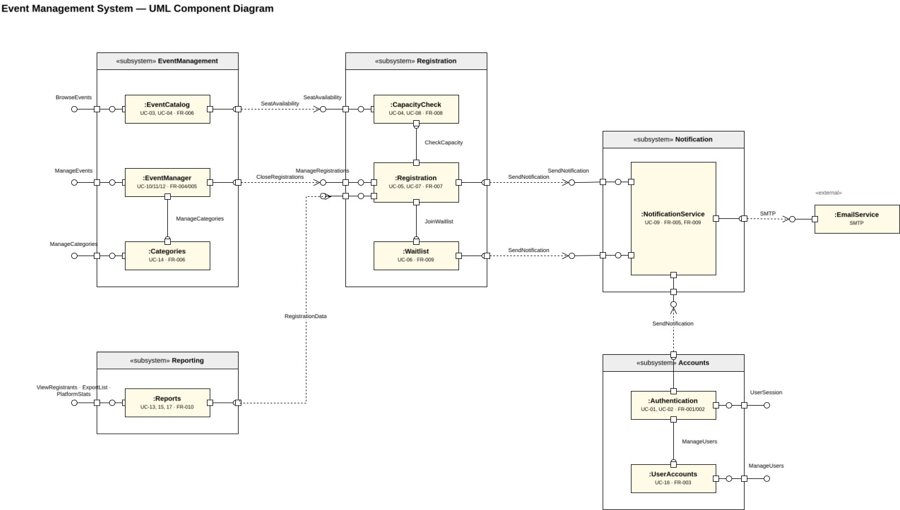
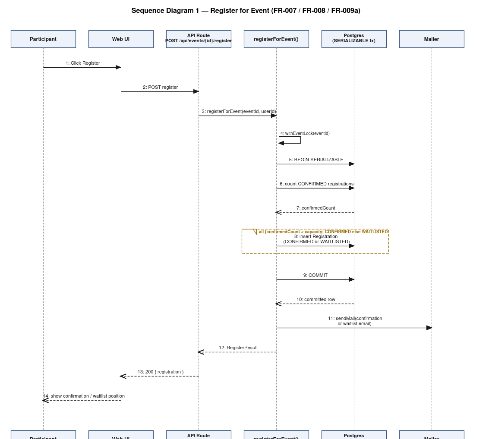
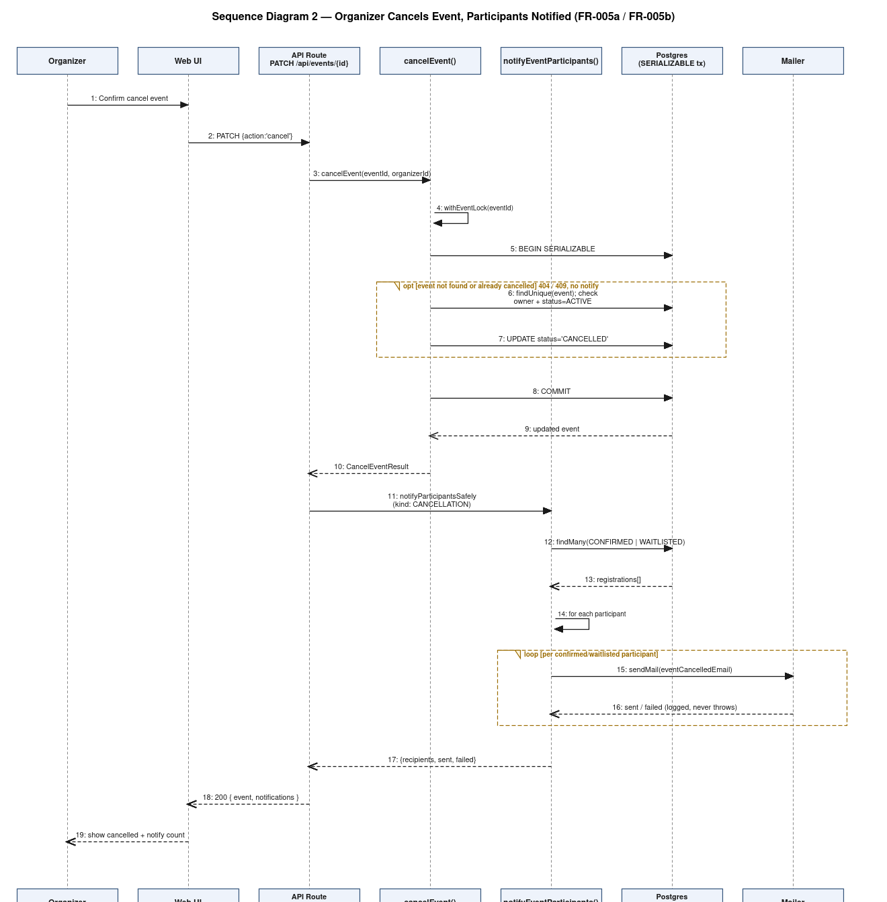

Event Management System
| Project: | Event Management System (EMS) — SE Mini Project |
| Version: | 3.0 |
| Authors: | Shravani Mallur (PES1UG24CS621) · Arjun Bhat (PES1UG24CS655) · Amogh Herle (PES1UG24CS653) |
| Date: | 13 November 2026 |
| Status: | Final (Sprint 2 frozen) — updated 13 Nov 2026 |
| Version | Date | Author | Change summary | Approval |
|---|---|---|---|---|
| 1.0 | 21 Oct 2026 | Team | First issue (Sprint 1) | |
| 2.0 | 04 Nov 2026 | Team | Sprint 2 update | |
| 3.0 | 13 Nov 2026 | Team | Restructured to the course SAD template; accuracy fixes to security architecture (session TTL, demo-role fallback); deviations updated |
| Role | Name | Signature / Email | Date |
|---|---|---|---|
| Course Coordinator | |||
| Repository Owner | Amogh Herle | ||
| Team members | Shravani Mallur, Arjun Bhat |
This document specifies the architecture and design of EMS: the architectural pattern, component decomposition, traceability to the SRS, the security architecture, and the detailed design of two key workflows, the API and error handling.
The Next.js web application, its server-side API, business-logic layer and PostgreSQL data store. Infrastructure provisioning and CI/CD are covered only where they affect error handling or deployment fallbacks.
Developers, QA engineers, security auditors, instructors/evaluators and maintainers.
| Term | Meaning |
|---|---|
| ADR | Architecture Decision Record |
| RBAC | Role-Based Access Control |
| ORM | Object-Relational Mapper (Prisma) |
| SERIALIZABLE tx | PostgreSQL transaction at SERIALIZABLE isolation |
| IDOR | Insecure Direct Object Reference |
| STRIDE | Spoofing, Tampering, Repudiation, Information disclosure, DoS, Elevation of privilege |
| TLS / SMTP | Transport Layer Security / Simple Mail Transfer Protocol |
Section 3 gives the architecture (diagrams, components, pattern, stack, risks, traceability, security). Section 4 gives the design (sequence diagrams, API, error handling, UX, open issues and deviations). Read 3.8 to find which component implements a requirement.
Goals: correct seat accounting under concurrency (no overbooking), secure role-based access, simple deployment, testability. Constraints: three-person team and three sprints, free-tier hosting, single deployable unit, ORM-only data access, SMTP-only notifications.
| Stakeholder | Concerns |
|---|---|
| Participants | Fast browsing and registration, clear errors, accessibility |
| Organizers | Accurate registrations, safe edit/cancel, attendee export |
| Admins | Account control, auditability, statistics |
| Evaluators / instructors | Traceability, security, documented deviations |
| Developers | Modularity, testability, ≥80% core coverage |

| Subsystem | Component | Responsibility | Key files |
|---|---|---|---|
| EventManagement | EventCatalog | Browse, search and filter active events | app/events/page.tsx, lib/eventFilters.ts |
| EventManagement | EventManager | Create, edit, cancel events (organizer-owned) | app/events/create, app/api/events/[id]/route.ts |
| EventManagement | Categories | Admin-managed category list | lib/categories.ts, app/admin/categories |
| Registration | CapacityCheck | Atomic seat-count enforcement | lib/registration.ts (registerForEvent) |
| Registration | Registration | Register for / cancel a registration | app/api/events/[id]/register, app/api/registrations |
| Registration | Waitlist | FIFO waitlist with auto-promotion | lib/registration.ts |
| Notification | NotificationService | Templated transactional email | lib/emailTemplates.ts, lib/mailer.ts |
| Reporting | Reports | CSV/PDF export, statistics | lib/export.ts, lib/stats.ts |
| Accounts | Authentication | Signup, login, verification, reset, session | lib/auth.ts, lib/session.ts, lib/tokens.ts |
| Accounts | UserAccounts | Admin view/suspend/delete users | app/api/admin/users |
Layered (N-tier) modular monolith in one Next.js application: Presentation (React components) → API/Controller (route handlers: validate, call one business function, map to HTTP) → Business Logic (lib/*: capacity, waitlist, RBAC, notifications) → Data Access (Prisma/PostgreSQL). Each layer calls only the one below it. Two cross-cutting mechanisms sit alongside: a per-event in-process mutex plus SERIALIZABLE transactions, and a notification dispatcher invoked only after commit.
Rationale: clear separation of concerns, easy unit/integration testing, minimal operational overhead for a three-person team. Rejected: microservices (needless network and deployment complexity at this scale); client-side rules (cannot be trusted for capacity or roles).
| Concern | Choice |
|---|---|
| Language / framework | TypeScript, Next.js 14 (App Router), React 18 |
| Database | PostgreSQL 16 via Prisma 5 (six entities: User, Event, Registration, Category, VerificationToken, PasswordResetToken) |
| Validation | zod schemas (lib/validation.ts) |
| Auth | bcryptjs (cost 12), HMAC-signed session cookie (lib/session.ts) |
| nodemailer (SMTP; jsonTransport in tests) | |
| Testing / CI | node:test via tsx, GitHub Actions with a Postgres service container |
| Hosting | Vercel + managed PostgreSQL |
| Risk | Mitigation |
|---|---|
| Overbooking under concurrent requests | withEventLock + SERIALIZABLE transactions + unique (userId, eventId); verified at 100 concurrent requests |
| Mail provider failure | Notification runs after commit and never fails the primary action; failures counted and logged |
| Database unreachable | Limited in-memory fallback for demo/tests; capacity guarantees require the real DB |
| Latency at 500 concurrent users (NFR-001) not met in local test | Tracked deviation; investigate connection pooling and per-event lock scope |
| Client-claimed role fallback (demo header) accepted without session | Tracked deviation; gate fallback to non-production |
| Unreviewed merges (PRs #46/#48/#49) | Reverted and re-merged after review; branch protection recommended |
Mirrors the SRS RTM (SRS §8) against the components above.
| Requirement | Description | Primary component(s) | Supporting NFR(s) |
|---|---|---|---|
| FR-001a/b | Account creation + email verification | Authentication | NFR-003 |
| FR-002a/b | Login, password reset | Authentication | NFR-003, NFR-004 |
| FR-003a/b/c | RBAC, profile, admin user management | Authentication, UserAccounts | NFR-003, NFR-004 |
| FR-004a/b | Create / edit events | EventManager | NFR-005 |
| FR-005a/b | Cancel events, notify participants | EventManager, NotificationService | NFR-004, NFR-007 |
| FR-006a/b/c | Browse, search, filter, categories | EventCatalog, Categories | NFR-001, NFR-002, NFR-006 |
| FR-007 | Register for events | Registration | NFR-001, NFR-002, NFR-005, NFR-006 |
| FR-008 | Capacity check / overbooking prevention | CapacityCheck | NFR-001, NFR-002, NFR-006, NFR-007 |
| FR-009a/b | Waitlist, self-cancellation, notifications | Waitlist, Registration, NotificationService | NFR-002, NFR-007 |
| FR-010a/b | Counts, export, statistics | Reports | NFR-001, NFR-002, NFR-005 |
| Threat | Example | Mitigation in design | Status |
|---|---|---|---|
| Spoofing | Forged session cookie; claimed role | HMAC-SHA256 signed cookie, constant-time compare; real-session-only requireAdmin | Partly met — demo role fallback still trusted for Organizer/Participant routes (SEC_13) |
| Tampering | Edit another organizer's event; malformed input | Ownership checks (IDOR), zod validation, parameterized Prisma queries | Met |
| Repudiation | Admin action denied later | Durable audit log | Not met in main (SEC_10) |
| Information disclosure | Password leak, account enumeration | bcrypt hashes, hashed tokens, generic login/reset responses, TLS | Met |
| Denial of service | Brute-force login, request floods | Account lockout, rate limiting | Not met in main (SEC_03); no rate limiting |
| Elevation of privilege | Participant calls organizer API | Server-side RBAC re-derived from the DB row on every request | Met for real sessions |
userId.expiresAt.signature, HMAC-SHA256, verified with timingSafeEqual; HttpOnly, SameSite=Lax, Secure in production. The session carries only a user id and expiry, so suspension or role change applies on the next request. Expiry is a fixed 7-day absolute TTL; the SRS requires 30 minutes of inactivity (deviation D3).requireAdmin accepts only a real session. requireOrganizer and the participant routes use getAuthUserFromRequest, which falls back to a client-supplied x-user-role header or event_session_role cookie when no session exists. This demo fallback (used by the role-switcher UI) means an unauthenticated caller can act as the shared demo Organizer/Participant; it does not grant Admin. Earlier revisions of this document incorrectly said the header only affected the UI. (deviation D4)event.organizerId to edit, cancel or export.usedAt), 24 h (verification) / 1 h (reset).escapeHtml() in email templates; React output escaping; CSV formula-injection neutralization.withEventLock + withSerializableTransaction (one retry on P2034); cancellation guarded by UPDATE … WHERE status='ACTIVE' so participants are notified at most once.| Req | SRSec § | Requirement | Status | Where / note |
|---|---|---|---|---|
| SR-001 | 2.1 | Passwords shall be stored only as salted bcrypt/Argon2 hashes and never logged. | Met | bcryptjs cost 12 in signup / reset-password |
| SR-002 | 2.2 | Session cookies shall be HttpOnly, SameSite and Secure (production), HMAC-signed, and shall expire after 30 minutes of inactivity. | Partial | Cookie flags and HMAC met; expiry is a 7-day absolute TTL, not 30 min idle |
| SR-003 | 2.3 | The account shall lock after 5 consecutive failed login attempts. | Not met in main | Implemented only in uncommitted local work (app/api/auth/login/route.ts); not merged, no tests |
| SR-004 | 3.1, 3.2 | RBAC and least privilege shall be enforced on the server for every request; no client-supplied role claim shall be trusted. | Partial | requireAdmin uses real sessions only; the Organizer/Participant demo fallback still trusts x-user-role / event_session_role |
| SR-005 | 3.3 | Object references shall be authorized server-side (ownership checks) to prevent IDOR. | Met | event.organizerId checks in app/api/events/[id], export, registrations |
| SR-006 | 4.1 | All client-server traffic shall use TLS 1.2 or higher. | Met (hosting) | Enforced by the hosting platform (Vercel); not independently scanned |
| SR-007 | 4.2 | Sensitive data at rest shall be encrypted. | Met (hosting) | Managed PostgreSQL encryption at rest; no application-level field encryption |
| SR-008 | 5.1 | All database access shall use parameterized queries / an ORM. | Met | Prisma only; no raw SQL |
| SR-009 | 5.2 | User-supplied input shall be validated and output encoded to prevent XSS. | Met | zod validation, escapeHtml in emails, React escaping, CSV formula neutralization |
| SR-010 | 5.3 | State-changing requests shall be protected against CSRF. | Partial | SameSite=Lax cookie only; no anti-CSRF token |
| SR-011 | 6.1, 6.2 | Security events and administrative actions shall be recorded in a durable audit log (12 months) without secrets or plain-text passwords. | Not met in main | AuditLog model and logEvent exist only in uncommitted local work; main logs console.error only |
| SR-012 | 2.1 | Verification and reset tokens shall be random, single-use, time-limited and stored hashed; login errors shall not reveal whether an account exists. | Met | lib/tokens.ts (sha256 hash, usedAt, expiresAt) |
Layered modules for separation of concerns. The persistent model has six entities; the unique constraint on Registration(userId, eventId) is what finally enforces duplicate-registration prevention even if application checks were bypassed.
| Entity | Key fields | Relationships |
|---|---|---|
| User | id, name, email (unique), passwordHash, role, verified, suspended | 1—N Event (organizer), 1—N Registration |
| Event | id, name, date, time, venue, category, categoryId, capacity, status | N—1 User, 1—N Registration, N—1 Category |
| Registration | id, userId, eventId, status (CONFIRMED|WAITLISTED|CANCELLED), reminderSentAt | N—1 User, N—1 Event; unique (userId, eventId) |
| Category | id, name (unique) | 1—N Event |
| VerificationToken | id, userId, tokenHash (unique), expiresAt, usedAt | N—1 User |
| PasswordResetToken | id, userId, tokenHash (unique), expiresAt, usedAt | N—1 User |
Two sequence diagrams covering two project-specific flows, traced from the code.


All endpoints are under /api (Next.js route handlers), JSON bodies. Auth: Public, Session, Organizer (owner), Admin (real session only).
| Endpoint | Methods | Auth | Purpose |
|---|---|---|---|
| /api/auth/signup | POST | Public | Create account, send verification email |
| /api/auth/verify | POST | Public | Consume verification token |
| /api/auth/login | POST | Public | Verify credentials, issue session cookie |
| /api/auth/logout | POST | Session | Clear session cookie |
| /api/auth/forgot-password | POST | Public | Send password-reset link |
| /api/auth/reset-password | POST | Public | Consume reset token, set password |
| /api/auth/me | GET, PATCH | Session | Read / update own profile |
| /api/events | GET, POST | GET public · POST Organizer | List/search events · create event |
| /api/events/{id} | GET, PATCH, PUT, DELETE | GET public · others Organizer (owner) | Fetch · cancel · edit · delete |
| /api/events/{id}/register | GET, POST, DELETE | Session | Check / create / cancel registration |
| /api/events/{id}/waitlist | GET, POST, DELETE | Session | Waitlist position / join / leave |
| /api/events/{id}/export | GET | Organizer (owner) or Admin | CSV/PDF/JSON participant export |
| /api/registrations | GET, POST, DELETE | Session | Own registrations |
| /api/categories | GET | Public | Active categories |
| /api/reminders | GET, POST | Internal/cron | Dispatch event reminders |
| /api/admin/users | GET | Admin | List accounts |
| /api/admin/users/{id} | PATCH, DELETE | Admin | Suspend/unsuspend · delete |
| /api/admin/categories[/{id}] | GET, POST, PATCH, DELETE | Admin | Manage categories |
| /api/admin/stats (alias /statistics) | GET | Admin | Platform-wide counts |
| Item | POST /api/events/{id}/register (Registration) | PATCH /api/events/{id} (EventManager) |
|---|---|---|
| Request | { waitlist?: boolean } + session cookie | { action: "cancel" } + session cookie (owner) |
| Success | 201 { id, userId, eventId, status: CONFIRMED|WAITLISTED, waitlistPosition? } | 200 { event, notifications: { recipients, sent, failed } } |
| Errors | 400 event full / event cancelled / invalid body · 401 not authenticated · 403 suspended · 404 event or user not found · 409 already registered | 401 not authenticated · 403 not the owner / not an organizer · 404 event not found · 409 already cancelled · 500 unexpected (generic message) |
| Guarantees | Exactly one record per (user, event); never exceeds capacity; email after commit | Participants notified at most once; mail failure does not fail the cancel |
| Item | POST /api/auth/login (Authentication) |
|---|---|
| Request | { email, password } |
| Success | 200 { id, name, email, role } + Set-Cookie session (HttpOnly; SameSite=Lax; Secure in production) |
| Errors | 400 invalid body · 401 invalid email or password (same message for both) · 403 not verified / suspended |
Every route returns NextResponse.json(body, { status }). Errors are a flat { error } (plus field errors for validation), never a stack trace.
| Status | Meaning |
|---|---|
| 400 | Malformed JSON or failed zod validation; business rule such as event full |
| 401 | No valid session where required |
| 403 | Valid session but wrong role, not the owner, or suspended |
| 404 | Event/user/registration does not exist |
| 409 | State conflict: already registered/cancelled, capacity below confirmed count, stale edit |
| 500 | Unexpected error: logged via console.error, generic message to the client |
| Code | Meaning | Handling |
|---|---|---|
| P2002 | Unique constraint (duplicate email or registration) | 409 duplicate |
| P2025 | Conditional update/delete matched no row | 404 or 409 depending on call site (e.g. already cancelled) |
| P2034 | Write conflict under SERIALIZABLE | Retried once, then 500 |
| P2021 | Optional table missing in an environment | Treated as 'no category relation' |
| PrismaClientInitializationError | Database unreachable | In-memory fallback for demo/tests (no capacity guarantees) |
notifyParticipantsSafely returns {recipients, sent, failed}).expectedUpdatedAt (409 on mismatch).console.error only — no durable central log (deviation D5).Role-aware navigation, quick-register on event cards, seat availability shown on cards, explicit error messages for full/duplicate/cancelled cases, confirmation dialogs for cancel/delete, and the WCAG 2.1 AA / 320 px responsive work tracked under NFR-006 (PR #63, open). axe-core reports 0 violations on the scanned pages; 7 of 9 pages overflow horizontally at 320 px on main.
Deviations from the initial SRS/SAD, documented for the demo (IDs referenced from the Test Plan):
| ID | Deviation | Requirement | Tracking |
|---|---|---|---|
| D1 | FR-004b, FR-006b and FR-006c were merged then reverted (unreviewed merges) and re-merged after review; the architecture here is the re-reviewed state. | FR-004b/006b/006c | PRs #46–#54 |
| D2 | NFR-001 latency targets not met at 500 concurrent users in the local load test (list p95 8.3 s; 500 simultaneous registrations p95 121.7 s). | NFR-001 | Test NFT_02; no backlog item (#56 removed) |
| D3 | Sessions use a 7-day absolute TTL; no 30-minute inactivity timeout. | NFR-004, SRSec 2.2 | SEC_11; issue #59 |
| D4 | Demo role fallback (x-user-role header / event_session_role cookie) is accepted by Organizer/Participant routes without a session. | NFR-004, SRSec 3.1 | SEC_13; issue #59 |
| D5 | Account lockout (SRSec 2.3) and durable audit/central log (SRSec 6.1/6.2) are not in main; uncommitted local work exists but is untested and currently fails `tsc`. | NFR-004, NFR-007 | SEC_03, SEC_10; issues #59, #62 (PR #64 open) |
| D6 | Uptime monitoring and a scheduled daily backup are not configured; a manual restore drill passed locally. | NFR-005 | NFT_07 |
| D7 | NFR-006: 320 px horizontal overflow on main and no usability study; fixed in open PR #63. | NFR-006 | NFT_08, NFT_11; issue #61 |
| D8 | CSRF protection is SameSite=Lax only (no anti-CSRF token). | SRSec 5.3 | SEC_09 |
| D9 | Encryption at rest and TLS rely on the hosting platform; PII is not field-encrypted. | SRSec 4.1/4.2 | SEC_06 |
Next steps: gate the demo role fallback to non-production, add an inactivity timeout, merge reviewed lockout/audit-log work with tests, review and merge PRs #63/#64, profile registration latency under load, configure backups and uptime monitoring.
ADR, RBAC, IDOR, STRIDE, SERIALIZABLE transaction, ORM, TLS, SMTP — see §1.4.
draw.io (use case and component diagrams), sequence-diagram generator for Figures 2–3, Prisma, GitHub Projects/Actions, axe-core, PostgreSQL tools (pg_dump/pg_restore).